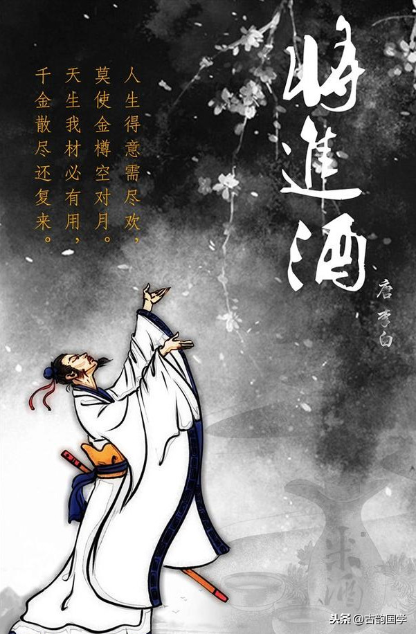
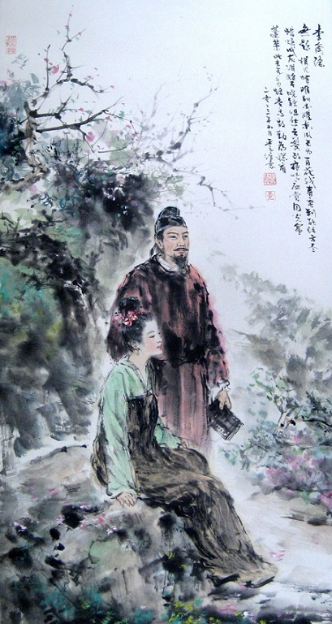

诗
 别称：诗歌
起于春秋战国
盛行于唐朝
文学之祖，艺术之根
别称：诗歌
起于春秋战国
盛行于唐朝
文学之祖，艺术之根
诗
是一种用高度凝练的语言，形象表达作者丰富情感，集中反映社会生活并具有一定节奏和韵律的文学体裁。
诗乃文学之祖，艺术之根。诗是一种阐述心灵的文学体裁，而诗人则需要掌握成熟的艺术技巧，
并按照一定的音节、声调和韵律的要求，用凝练的语言、充沛的情感以及丰富的意象来高度集中地表现社会生活和人类精神世界。
典型代表：唐诗
代表人物：李白，杜甫，白居易。作品：《将进酒》、《三吏三别》、《长恨歌》
唐诗的形式和风格是丰富多彩、推陈出新的。它不仅继承了汉魏民歌、乐府传统，并且大大发展了歌行体的样式；
不仅继承了前代的五、七言古诗，并且发展为叙事言情的长篇巨制；不仅扩展了五言、七言形式的运用，还创造
了风格特别优美整齐的近体诗。近体诗是当时的新体诗，它的创造和成熟，是唐代诗歌发展史上的一件大事。它
把我国古曲诗歌的音节和谐、文字精炼的艺术特色，推到前所未有的高度，为古代抒情诗找到一个最典型的形式，
至今还特别为人民所喜闻乐见。但是近体诗中的律诗，由于它有严格的格律的限制，容易使诗的内容受到束缚，
不能自由创造和发挥，这是它的长处带来的一个很大的缺陷。

将进酒
作责：李白
《将进酒》
君不见黄河之水天上来，奔流到海不复回。
君不见高堂明镜悲白发，朝如青丝暮成雪。
人生得意须尽欢，莫使金樽空对月。
天生我材必有用，千金散尽还复来。
烹羊宰牛且为乐，会须一饮三百杯。
岑夫子，丹丘生，将进酒，杯莫停。
与君歌一曲，请君为我倾耳听。
钟鼓馔玉不足贵，但愿长醉不愿醒。
古来圣贤皆寂寞，惟有饮者留其名。
陈王昔时宴平乐，斗酒十千恣欢谑。
主人何为言少钱，径须沽取对君酌。
五花马、千金裘，呼儿将出换美酒，与尔同销万古愁。
赏析：
杜甫盛赞李白的诗说“笔落惊风雨，诗成泣鬼神”，李白自己也十分自负地说“兴酣落笔摇五岳，
诗成啸傲凌沧洲”，他的诗极富浪漫主义色彩，想象丰富，极尽夸张之能事，一旦诗兴大发之时，
豪情便喷薄而出，一泻千里，但又收放自如，达到了极高的艺术境界，《将进酒》即为明证。
本诗深沉浑厚，气象不凡。情极悲愤狂放，语极豪纵沉着，大起大落，奔放跌宕。诗句长短不一，
参差错综；节奏快慢多变，一泻千里。李白的人生，可谓是悲剧的人生。《将进酒》一诗，是其悲剧人生的写照。
有人称《将进酒》是李白诗歌艺术的颠峰之作，也有人称那不过是他醉酒后的胡言乱语。其人，其诗，其酒，三位一体，
方是真正的李白。

无题
作者：李商隐
《无题》
相见时难别亦难，东风无力百花残。
春蚕到死丝方尽，蜡炬成灰泪始干。
晓镜但愁云鬓改，夜吟应觉月光寒。
蓬山此去无多路，青鸟殷勤为探看。
解析
相见时难别亦难，说的是义山当时的处境艰难，离开徐州到长安后想进翰林院，向令狐綯说明此时，
也就是找熟人走个后门，令狐陶升官之后，为了避嫌谢绝见客，致使义山处境尴尬，相见难，离别又不甘心，所以出此名句。
东风无力百花残，当时义山已经很大年纪，东风无回天之力挽救百花的凋零，映射自己留不住
青春春蚕到死丝方尽，蜡炬成灰泪始干，此名句献给所有为理想奋斗终生之人。
晓镜但愁云鬓改，夜吟应觉月光寒，和上句呼应，青春难留，云鬓斑白，蜡炬燃尽，月光甚寒。
蓬山此去无多路，青鸟殷勤为探看，最后一句起死回生，由深深地“到死”,"成灰"的绝望，
到‘无多路’，可见作者还是对綯抱有希望，不肯决绝。
从现在来看，此诗不难看出也是写给令狐綯，希望他看到之后体会到自己的心情，
也希望綯能感受到自己并没有绝望，而是继续等待綯这个救命稻草的帮助。